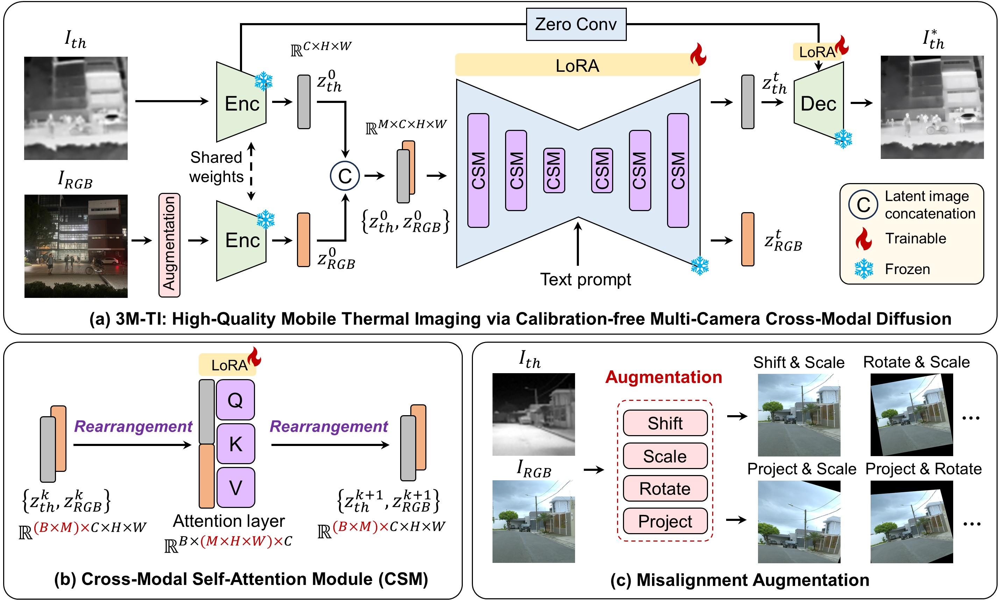

The miniaturization of thermal sensors for mobile platforms inherently limits their spatial resolution and textural fidelity, leading to blurry and less informative images. Existing thermal super-resolution (SR) methods can be grouped into single-image and RGB-guided approaches: the former struggles to recover fine structures from limited information, while the latter relies on accurate and laborious cross-camera calibration, which hinders practical deployment and robustness. Here, we propose 3M-TI, a calibration-free Multi-camera cross-Modality diffusion framework for Mobile Thermal Imaging. At its core, 3M-TI integrates a cross-modal self-attention module (CSM) into the diffusion UNet, replacing the original self-attention layers to adaptively align thermal and RGB features throughout the denoising process, without requiring explicit camera calibration. This design enables the diffusion network to leverage its generative prior to enhance spatial resolution, structural fidelity, and texture detail in the super-resolved thermal images. Extensive evaluations on real-world mobile thermal cameras and public benchmarks validate our superior performance, achieving state-of-the-art results in both visual quality and quantitative metrics. More importantly, the thermal images enhanced by 3M-TI lead to substantial gains in critical downstream tasks like object detection and segmentation, underscoring its practical value for robust mobile thermal perception systems.
The 3M-TI framework reconstructs a high-resolution thermal image from a low-resolution thermal input and an uncalibrated high-resolution RGB reference, as illustrated in Fig. (a). Our approach is built upon the one-step diffusion model, SD-Turbo, to ensure efficient inference. The process begins by encoding the thermal and RGB images into latent representations using the frozen VAE encoder. To establish cross-modal correspondence and fusion in the latent space, we introduce the cross-modal self-attention module (CSM). This module replaces the original self-attention layers in the diffusion UNet with our cross-modal self-attention layers, which are designed to learn multiscale correspondences between the RGB and thermal latents (Fig. (b)). During training, we apply misalignment augmentation to the RGB images to enhance robustness against uncalibration and temporal unsynchronization (Fig. (c)). Furthermore, a skip connection is incorporated to enhance structural consistency and mitigate geometric distortions.
We compare our model against 5 representative baselines: CoReFusion, SwinFuSR, SwinPaste, SeeSR, and OSEDiff. CoReFusion is an RGB-guided super-resolution model built upon the UNet architecture. SwinFuSR employs a Swin Transformer backbone with RGB guidance, while SwinPaste is an enhanced variant. SeeSR and OSEDiff are diffusion-based image super-resolution methods without reference guidance. For fair comparison, all baseline models are retrained on our dataset using their publicly released codes.
In this experiment, we evaluate two representative tasks: open-vocabulary object detection and semantic segmentation. we apply the pretrained Grounded-SAM model in a zero-shot manner (no fine-tuning) and use identical text prompts for all methods to ensure fair comparisons.
@misc{3MTI,
title={3M-TI: High-Quality Mobile Thermal Imaging via Calibration-free Multi-Camera Cross-Modal Diffusion},
author={Minchong Chen and Xiaoyun Yuan and Junzhe Wan and Jianing Zhang and Jun Zhang},
year={2025},
eprint={2511.19117},
archivePrefix={arXiv},
primaryClass={cs.CV},
url={https://arxiv.org/abs/2511.19117},
}